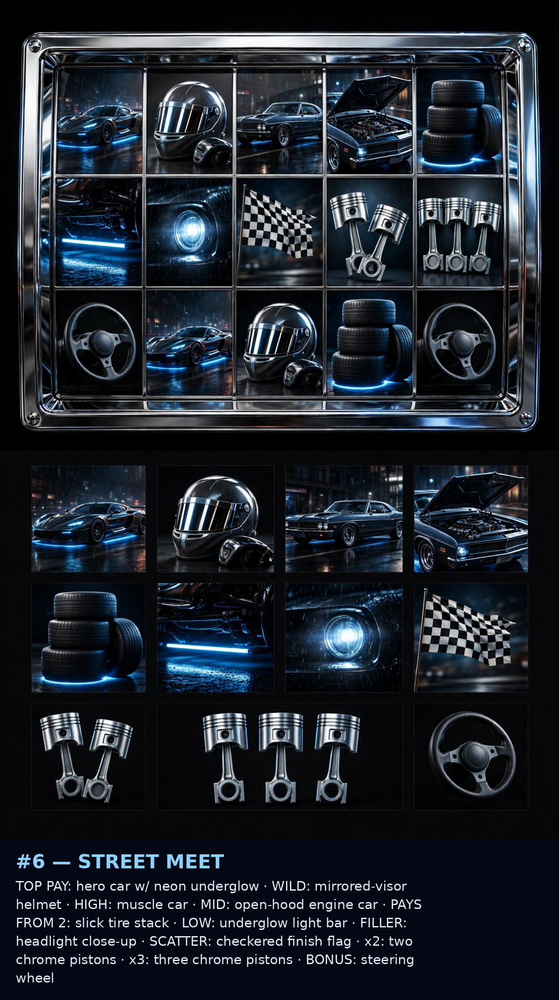
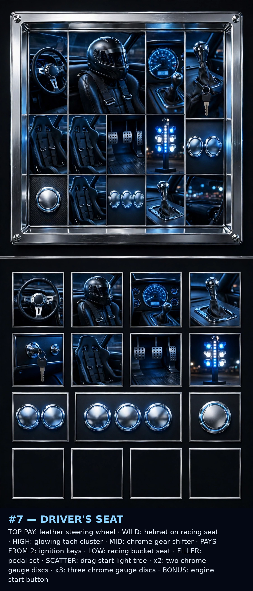
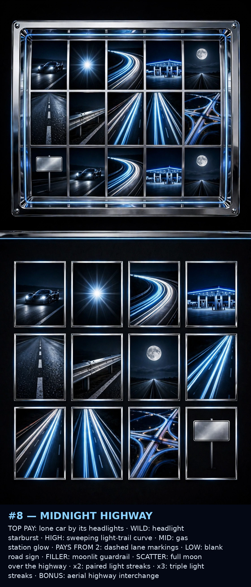
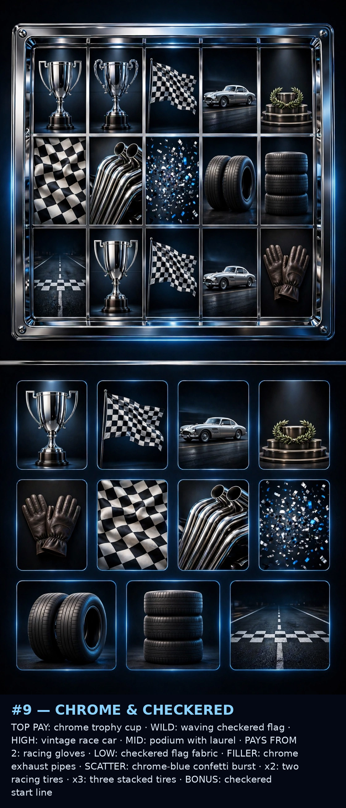
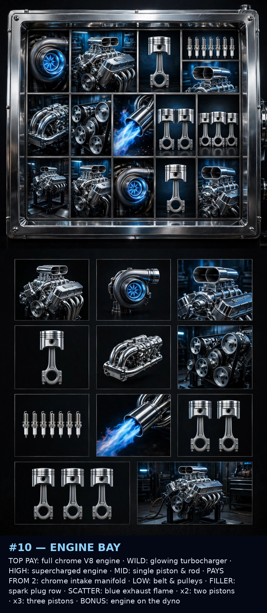
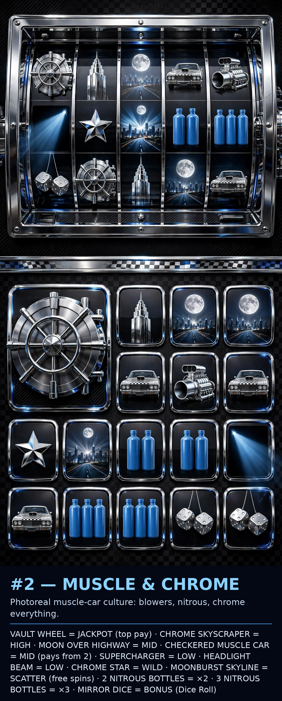
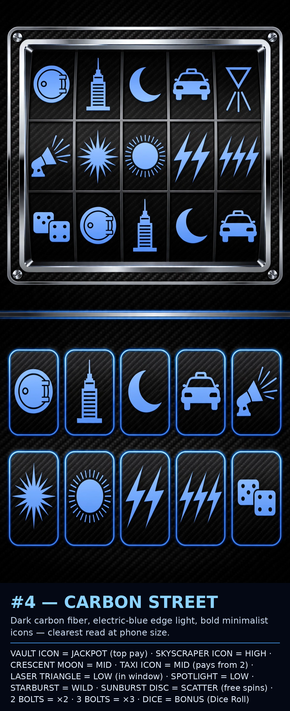

Midnight Skyline — New Reels
ROUND 2 — picks 6–10. All-new faces this time, straight out of the street-racing world: real cars, cockpits, highways, trophies and engine bays — rich photo tiles, not flat icons. Every set still covers the exact same 11 symbols and roles as the current machine, so whichever you pick drops straight onto the existing math — no payout changes.
EXAMPLES ONLY — the live machine is untouched. Just tell Midas the number you want.
#6 — Street Meet
Night car-meet: hero car on neon underglow, mirrored helmet, muscle car, open hoods and slicks.

#7 — Driver's Seat
The cockpit: leather wheel, glowing tach, chrome shifter, keys in the ignition, drag light tree.

#8 — Midnight Highway
Open road at night: headlights in the dark, sweeping light-trail curves, gas-station glow, moon over the blacktop.

#9 — Chrome & Checkered
Racing heritage: chrome trophy, checkered flags, vintage race car, podium and laurel, confetti burst.

#10 — Engine Bay
Mechanical beauty: a full chrome V8, glowing turbo, supercharger, pistons, blue exhaust flame.

TOP PAY — jackpot symbol (5 of a kind = 2,500) · HIGH · MID · PAYS FROM 2 — mid pay that pays from just 2 on a line · LOW · FILLER · WILD — substitutes for everything except Scatter (and pays as the #2 line symbol) · SCATTER — 3+ anywhere pays 2×/8×/40× total bet and awards 7/10/15 FREE SPINS (line wins double, retriggerable) · ×2 and ×3 — line multipliers (they multiply together, ×6 max) · BONUS — 3+ starts the Dice Roll bonus. Each board's legend under the symbol sheet names which face plays which role.
Round 1 — picks 1–5 (earlier round)
The first five directions, kept here for comparison.
#1 — Neon Nights
Glowing neon signage, wet-asphalt reflections, rain-slick city glow.

#2 — Muscle & Chrome
Photoreal muscle-car culture: superchargers, nitrous bottles, chrome everything.

#3 — Midnight City
Photoreal city-night icons: lit towers, street lamps, traffic lights, a classic yellow cab.

#4 — Carbon Street
Dark carbon fiber, electric-blue edge light, bold minimalist icons — the clearest read at phone size.

#5 — Retro Outrun
80s synthwave street racer: striped sunset, chrome grid horizon, wedge sports car.